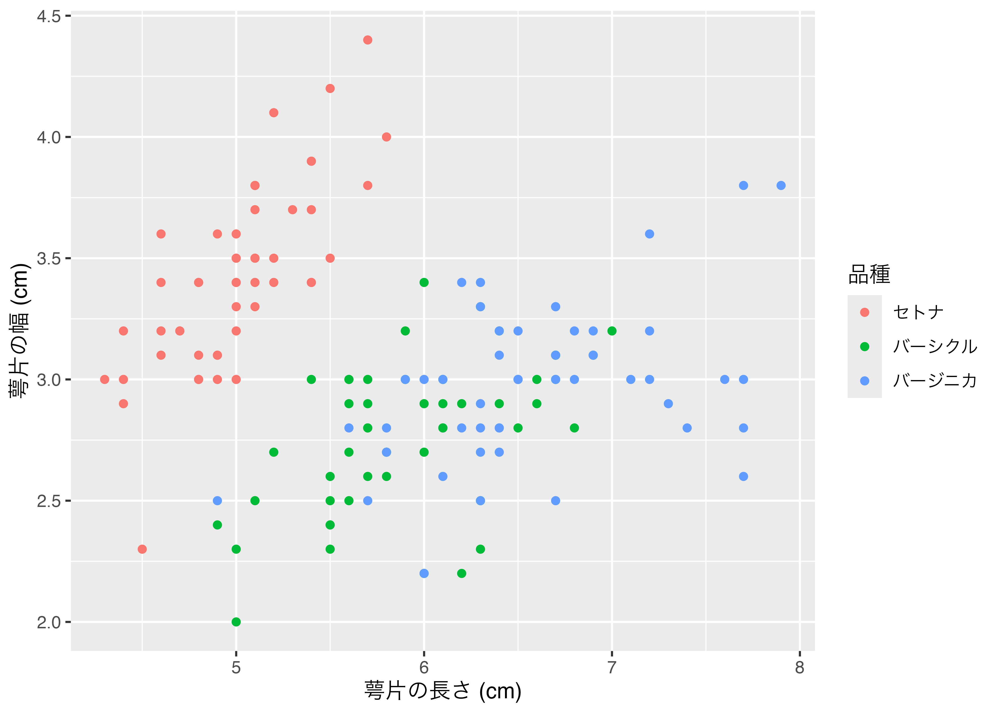

24 Quarto入門
24.1 Quartoとは
以下のように、QuartoとR Markdownは同じやり方でHTML/PDF/Wordファイルを生成する。
- R Markdown
.Rmd\(\rightarrow\) knitr \(\rightarrow\).md\(\rightarrow\) pandoc \(\rightarrow\) HTML/PDF/Word…
- Quarto
.qmd\(\rightarrow\) (knitr / Jupyter / Observable) \(\rightarrow\).md\(\rightarrow\) pandoc \(\rightarrow\) HTML/PDF/Word…
- R Markdownの場合、コードがRに限定されている（むろん、今はpythonなども使用可能）。
- 一方、Quartoはマルチリンガル（R、Pyhton、Juliaなど）
- R Markdownのエンジンはknitr
- 一方、Quartoはknitr、Jupyter、Observableが使用可能であり、今後も追加予定
- 文書作成のための{rmarkdown}、ホームページ作成のための{blogdown}、スライド作成のための{xaringan}など
- Quartoはこれらを全て一つに統合
- Quarto Extensionという拡張機能を追加する形式
- QuartoはRStudio以外にもVS Code、Jupyterなどでも使用可能
- QuartoはR Markdownの上位互換でもなく、R Markdownを代替するものでもない（参考）。
- つまり、既存のR Markdownを問題なく使っているのであれば、Quartoへの移行は不要
- 現在のところ、QuartoはR Markdown生態系を一つに統合したものに近く、文法などもほぼ同じであるため、移行のために新しい事をゼロベースから勉強する必要はほぼない
24.2 セットアップ
- Quartoのインストール
- RStudioのアップデート
Quartoのインストール
- https://quarto.org/docs/get-started/
- 自分のOSに合わせてダウンロード&インストール
{quarto}のインストール（インストールしておくだけで良い）
24.3 簡単な使い方
Quartoは基本的にR Markdownと同じ感覚で使える。たとえば、R Markdownで新しい文書を作成する際はRStudioのFile > New File > R Markdown…を選択するが、QuartoはFile > New File > Quarto Document…を選択する1くらいの違いだ。ただし、作成したファイルを文書に変換するときにはR Markdownだと「Knit」ボタンをクリックしたが、QuartoはKnit以外にもJupyterやObservableなども使用可能であるため、代わりに「Render」ボタンをクリック2しよう。
以下ではR MarkdownとQuartoの書き方の違いについて解説する。すべてを列挙することはできないため、よく使う機能の相違点のみを紹介する。より詳しく知りたい場合はQuartoの公式ホームページを参照すること。
24.3.1 チャンクオプションの付け方
現時点においてR Markdownと同じ書き方でも問題ない。つまり、```{r}のrの後ろにチャンクのラベル、オプションを付けても問題なく作動する。
```{r fig-scatter1, fig.height = 5, fig.width = 7, fig.cap = "図の例", cache = TRUE}
iris %>%
mutate(Species2 = recode(Species,
"setosa" = "セトナ",
"versicolor" = "バーシクル",
"virginica" = "バージニカ")) %>%
ggplot() +
geom_point(aes(x = Sepal.Length, y = Sepal.Width, color = Species2)) +
labs(x = "萼片の長さ (cm)", y = "萼片の幅 (cm)", color = "品種")
``` しかし、Quarto特有の書き方として、チャンクオプションを{r}内に書かず、チャンク内に#|で書く方法がある。#|とオプションの間には半角スペースを入れる必要がある。チャンクオプションが多くなると、コードが非常に長くなることもあるので、こちらの書き方が読みやすいだろう（しかも、{r}内のオプションは改行もできない）。ちなみに、チャンクのラベルのオプションはlabel:で指定する必要がある。
```{r}
#| label: fig-scatter1
#| fig-cap: "図の例"
#| fig-height: 5
#| fig-width: 7
#| fig-align: "center"
#| cache: true
iris %>%
mutate(Species2 = recode(Species,
"setosa" = "セトナ",
"versicolor" = "バーシクル",
"virginica" = "バージニカ")) %>%
ggplot() +
geom_point(aes(x = Sepal.Length, y = Sepal.Width, color = Species2)) +
labs(x = "萼片の長さ (cm)", y = "萼片の幅 (cm)", color = "品種")
``` これらのチャンクオプションはR Markdownとほぼ同じであるものの、一部名称が異なるオプションがある。たとえば、図の幅を指定するR Markdownのfig.widthは、Quartoだとfig-widthを使う。また、実引数としてTRUEとFALSEは、通常のYAMLと同様、trueとfalseを使用する。これはYAMLヘッダーでも同じだ。他にも仮引数 = 実引数でなく、仮引数: 実引数で書くことにも注意しよう。
24.3.2 相互参照について
図表の相互参照も方法もやや異なる。たとえば、チャンクのラベルがfig-scatter1という図がある場合、R Markdownでは図 \@ref(fig-scatter1)、またはFigure \@ref(fig-scatter1)と書く必要があった。しかし、Quartoだと@fig-scatter1だけで十分である。以下の例を見てみよう。
Input:
以下の @fig-scatter1 は萼片の長さと幅を品種ごとに分けて示した散布図である。
```{r}
#| label: fig-scatter1
#| echo: false
#| fig-cap: "萼片の長さと幅の関係（品種別）"
iris %>%
mutate(Species2 = recode(Species,
"setosa" = "セトナ",
"versicolor" = "バーシクル",
"virginica" = "バージニカ")) %>%
ggplot() +
geom_point(aes(x = Sepal.Length, y = Sepal.Width, color = Species2)) +
labs(x = "萼片の長さ (cm)", y = "萼片の幅 (cm)", color = "品種")
```Output:
以下の 図 24.1 は萼片の長さと幅を品種ごとに分けて示した散布図である。

図だけでなく、表や章でも同じやり方で相互参照ができる。ただし、一点注意が必要である。相互参照に使うチャンクのラベルに制約があることだ。R Markdownではチャンクラベルの制限がなかったものの、Quartoの場合ラベルはsec-（章・節など）、fig-（図）、tbl-（表）で始まる必要がある。図表はチャンクラベルで指定できるが、章や節などの見出しの場合、以下のようにラベルを指定する。この書き方はチャンク以外の図表にラベルを付ける時も同様だ（後述）。
## Rの素晴らしさについて {#sec-aboutR} また、Quartoの既定値のままだと「Figure X」と出力される。これを「図 X」の形式にしたい場合はYAMLヘッダーにlang: jaを追加するか、language:で別途指定する必要がある3。
24.3.3 コールアウト
Quartoでは5種類のコールアウト（callout）が提供される。以下はコールアウト作成のコードとその結果である。
Input:
:::{.callout-note}
## Rはみんなの友達!
末永くよろしくね!
:::Output:
末永くよろしくね!
Input:
:::{.callout-warning}
## Rはみんなの友達!
末永くよろしくね!
:::Output:
末永くよろしくね!
Input:
:::{.callout-important}
## Rはみんなの友達!
末永くよろしくね!
:::Output:
末永くよろしくね!
Input:
:::{.callout-tip}
## Rはみんなの友達!
末永くよろしくね!
:::Output:
末永くよろしくね!
Input:
:::{.callout-caution}
## Rはみんなの友達!
末永くよろしくね!
:::Output:
末永くよろしくね!
.callout-*の後にcollapse="true"を付けるとコールアウトの本文を隠すことができる（見出しをクリックすると本文が表示される）。
Input:
:::{.callout-note collapse="true"}
## Rはみんなの友達!（クリック）
末永くよろしくね!
:::Output:
末永くよろしくね!
また、.callout-*の後にicon="false"を付けると見出しの左にあるアイコンを消すことができる。
Input:
:::{.callout-warning icon="false"}
## Rはみんなの友達!
末永くよろしくね!
:::Output:
24.3.4 段組み
Quartoの段組みは非常に簡単だ。::::{.columns}と::::で囲まれた領域内の内容が段組みの対象となり、:::{.column}と:::で囲まれた領域が一つ一つの段となる。また、.columnの次にwidth引数を追加することで、段の幅を指定することもできる。以下はコードのその結果を2段構成で示した例だ。
Input:
::::{.columns}
:::{.column width=56%}
**コード:**
```{r}
#| eval: false
x <- c(1, 2, 3, 1, 2)
y <- c("A", "A", "A", "B", "B")
paste0(x, y)
```
:::
:::{.column width=2%}
:::
:::{.column width=42%}
**結果:**
```{r}
#| echo: false
x <- c(1, 2, 3, 1, 2)
y <- c("A", "A", "A", "B", "B")
paste0(x, y)
```
:::
::::Output:
24.3.5 パネル
パネルは段組みのように複数の内容を同じ行に出力する機能であるが、段組みは左右に並べる一方、パネルが異なるページへ出力する。たとえば、データセットの作成と、そのデータを使った作図のコードを示す場合、2つのチャンクを横に並べるには幅が狭いかも知れない。この場合、使えるのがパネル機能だ。使い方は段組みより簡単で、:::{.panel-tabset}と:::間に入力された内容がパネル内容になる。各パネルのタイトルは##見出しで指定でき、これが各パネルの区切りにもなる。
Input:
:::{.panel-tabset}
## データ
```{r}
library(tidyverse)
my_data <- tibble(City = c("東京", "北京", "ソウル"),
Pop = c(1396, 2154, 978))
my_data
```
## プロット
```{r}
#| fig-width: 8
#| fig-height: 4
my_data %>%
mutate(City = fct_inorder(City)) %>%
ggplot(aes(x = City, y = Pop)) +
geom_col() + # geom_bar(stat = "identity") もOK
labs(x = "都市", y = "人口（万人）") +
theme_bw(base_size = 14)
```
:::Output:

24.3.6 図表について
R Markdown/Quarto関係なく多くの図は{ggplot2}、{lattice}、Base Rなどで作成され、表は{knitr} + {kableExtra}、{gt}などで作成される。しかし、通常のMarkdown文法で表を作ったり、図を挿入したりするケースも多いだろう。QuartoはMarkdown文法の作成/挿入された図表のカスタマイズもより柔軟だ。
たとえば、図の大きさはの後ろに{}を付け、widthやheight引数を指定することで修正できる。たとえば、図の幅を100ピクセルにする場合はwidth=100pxで良い。サイズの指定方法はピクセル（px; 省略可）以外にも画面の幅に対する割合（例：50%）、インチ（例：4in）もできる。
Input:
Output:

Input:
{width=100px}Output:
他にも、で挿入される図の場合、R Markdownでは大きさの調整や中央揃えが面倒だ。しかし、Quartoの場合、後ろに{}を入れることでいくつかの修正ができる。
Input:
{fig-align="left"}Output:
Input:
{fig-align="center"}Output:
Input:
{fig-align="right"}Output:
他にも複数のグラフを並べることもR Markdownに比べ、簡単にできる。横に並べるなら段組みでもよいが、:::{layout-ncol}がより楽だ。ncolの代わりにnrowも指定できる。以下のコードは図を3列配置する例だ。
Input:
:::{layout-ncol=3}


:::Output:
図の相互参照とためのラベルはの後ろの{}内に#fig-で指定できる。並べた図にラベルを付けることもできる。
Input:
* 複数の図の相互参照: @fig-three-cats
* 個別の図の相互参照: @fig-cat1
:::{#fig-three-cats layout-ncol=3}
{#fig-cat1}
{#fig-cat2}
{#fig-cat3}
3匹の猫
:::Output:
- 複数の図の相互参照: 図 24.2
- 個別の図の相互参照: 図 24.2 (a)
:::{layout-ncol}を使えば、複数の表を並べることもできる。相互参照についても同じだが、ラベル名は#fig-の代わりに#tbl-を使う必要がある。
Input:
@tbl-two-tables は、東アジアとヨーロッパ主要都市の人口、面積、人口密度の一覧である。ただし、 @tbl-east-asia の東京は23区でなく、東京都全域であることに注意されたい。
::: {#tbl-two-tables layout-ncol=2}
| Name | Pop. | Area | Density |
|:--------|------:|-------:|--------:|
| Tokyo | 1,403 | 2,194 | 6,397 |
| Beijing | 2,170 | 16,410 | 1,323 |
| Seoul | 949 | 605 | 15,688 |
: East Asia {#tbl-east-asia}
| Name | Pop. | Area | Density |
|:-------|------:|------:|--------:|
| London | 943 | 1,569 | 5,354 |
| Berlin | 367 | 892 | 4,114 |
| Paris | 215 | 105 | 20,382 |
: Europe {#tbl-europe}
首都の人口（万人）、面積（km<sup>2</sup>）、人口密度（人/km<sup>2</sup>）
:::Output:
表 24.1 は、東アジアとヨーロッパ主要都市の人口、面積、人口密度の一覧である。ただし、 表 24.1 (a) の東京は23区でなく、東京都全域であることに注意されたい。
表 24.1: 首都の人口（万人）、面積（km2）、人口密度（人/km2）
| Name | Pop. | Area | Density |
|---|---|---|---|
| Tokyo | 1,403 | 2,194 | 6,397 |
| Beijing | 2,170 | 16,410 | 1,323 |
| Seoul | 949 | 605 | 15,688 |
| Name | Pop. | Area | Density |
|---|---|---|---|
| London | 943 | 1,569 | 5,354 |
| Berlin | 367 | 892 | 4,114 |
| Paris | 215 | 105 | 20,382 |
また、この機能はチャンクで生成された図についても使用かのうだ。チャンクオプションに#| layout-ncol: 2を追加すると、2つの図が横に並ぶことになる。詳しくはQuarto公式レファレンスを参照すること。
24.3.7 ハイパーリンクのターゲット
Markdownのハイパーリンクは以下のように書く。
[ここ](https://www.jaysong.net)をクリックすると宋のホームページへ移動します。「ここ」の文字をクリックすると宋のホームページへ飛ばされるコードである、R Markdownも、Quartoもデフォルトではそのウィンドウ/タブを使うことになる4。これを新しいウィンドウ/タブで開かせるためにはやむを得ずHTMLタグを使う必要がある。
<a href="https://www.jaysong.net" target="_blank">ここ</a>をクリックすると宋のホームページへ移動します。 しかし、Quartoだと通常のMarkdown記法を使うことができる。[]()の後ろに{target="_blank"}を付けるだけだ。実は書く手間としては若干軽減された程度であるが、地味に嬉しい機能だ。
[ここ](https://www.jaysong.net){target="_blank"}をクリックすると宋のホームページへ移動します。24.4 Quartoを知り尽くす
Quarto公式HP：https://quarto.org/docs/guide/
rstudio::conf 2022 Workshopの資料：https://rstudio-conf-2022.github.io/get-started-quarto/
もし、「Quarto Document…」が表示されない場合はRStudioが古いバージョンである可能性が高いため、予め最新バージョンにアップデートしておこう。↩︎
Knitボタンと同じ位置であり、ショートカットキーも同じく「Cmd + Shift + K (macOS)」、または「Ctrl + Shift + K (Windows)」である。↩︎
一つややこしいのが見出しの相互参照である。英語のままだと「Section 1」のように出力されるが、
lang:jaで日本語化すると「セクション 1」のように表示される。これを「第1章」にしたい場合は、第[-@sec-aboutR]章のように書く必要がある。[-@ラベル名]にすると「Section」、「セクション」、「Figure」、「図」などを出力せず番号のみが出力される。↩︎むろん、QuartoだとYAMLヘッダーに
link-external-newwindow: true追加することで外部ページは新しいウィンドウ/タブで開くように設定できる。↩︎